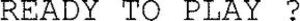

Trade Mark Journal No.2025/052 26 December 2025
WO0000001830267 (3,9,11,12,14,18,20,21,22,24,25,28,29,30,32,35,41)
Office of origin: France
Date of International Registration:30 August 2024
Date of designation in the UK:
30 August 2024

International priority date claimed: 4 March 2024
(France)
(5035609)
- Class 3
- Cosmetics; soaps; perfumery products; essential oils; hair lotions; dentifrices; hair conditioners; bath preparations for non-medical purposes; cosmetic products for skin care; cosmetic creams; deodorants; sun protection products; massage gels for non-medical purposes; warming massage gels for non-medical purposes; cleansing milks; cosmetic ointments; antiperspirant soaps for the feet; anti-perspirant soaps; shampoos; dry shampoos; non-medicinal bath products; lip care products; anti-irritation creams [for cosmetic use].
- Class 9
- Scientific, optical, measuring, signaling, monitoring (supervision) apparatus and instruments, life-saving apparatus and instruments; protective helmets for sport use; goggles for sports use; spectacle cases; distance measuring apparatus; satellite navigation systems, namely, a global positioning system (GPS); personal protection devices against accidents; electric door locking switches for motor vehicles; electric door-locking switches for two-wheeled vehicles; snorkels; downloadable digital files, authenticated by non-fungible tokens, depicting sporting goods or goods in connection with the world of sports; downloadable digital files, authenticated by non-fungible tokens, depicting tokens of value to be exchanged for goods and/or services for use in sports or in connection with the world of sport; sockets for electric lamps.
- Class 11
- Lighting apparatus; Light bulbs; flashing lights bulbs for vehicles; anti-glare devices for vehicles (lamp equipment); light diffusers; vehicle lighting; light emitting diode [LED] lighting apparatus; lighting for vehicles; electric lamps; lamps for lighting; flashlights; lanterns for lighting; vehicle headlights; flashlights for lighting; glasses for oil lamps; luminous tubes for lighting.
- Class 12
- Vehicles; land locomotion apparatus; engines for land vehicles; electric motors for bicycles and two-wheeled vehicles; inner tubes for pneumatic tires; repair kits for inner tubes; rubber patches for repairing inner tubes; tires; non-skid devices for tires; anti-glare devices for vehicles; stroller covers; luggage carriers for vehicles; safety seats for children; fitted protective covers for vehicles; saddle covers for vehicles; vehicle seat covers; hubs for vehicle wheels; gear boxes for land vehicles and horns; kickstands for two-wheelers; bicycles; bicycle frames; saddlebags for bicycles; bags for handlebars; rear panier bags, bottle cages, all these articles intended for bicycles and two-wheelers; brakes; handlebars, directional indicator; pedals, pumps, spokes, saddles for bicycles; mudguards; tires without inner tubes for two-wheelers; forks for two-wheeled vehicles; shock absorbers for vehicle suspension devices; bike racks; baskets for bicycles; cranks for bicycles; bicycle trailers; motor scooters.
- Class 14
- Clocks, watches, chronometers.
- Class 18
- Leather and imitation leather; hides and leather; harnessing items; saddlery articles; riding crops; straps of leather (saddlery); saddle trees; fastenings for saddles; saddle cloths for horses; saddlecloths for horses; bridles (harness); girths of leather; iron harness fittings; bits for animals, blinkers [harness], tail guards for horses, mane guards for horses, protective gaiters for horses; muzzles; shoulder collars [collars for horses]; horse blankets; clothing for horses; halters; whips; nose bags [feed bags]; knee-pads for horses; reins; tool bags; backpacks; bags for campers, mountaineering sticks; sports bags.
- Class 20
- Furniture, chairs (seats), bedding (except bed linen), mattresses; equipment storage boxes [furniture] used for horse care.
- Class 21
- Household or kitchen utensils and receptacles; combs and sponges; brushes (except paintbrushes); brush-making materials; metal wool for cleaning purposes; water bottles; refrigerating bottles; insulating flasks; insulated containers; glasses (containers).
- Class 22
- Ropes (neither of rubber, nor for rackets nor for musical instruments); strings; fishing nets; nets for camouflage; tents; awnings made of textile material; waterproof tarpaulins (except safety tarpaulins and pushchair covers); sails; fibrous raw textile materials.
- Class 24
- Bath linen (except clothing); bath towels.
- Class 25
- Clothing; footwear (excluding orthopedic footwear); headwear; underwear, shoes, socks, clothing (jackets) for fishermen; parkas; anoraks; raincoats; blousons; caps; boots; bathing suits; bath slippers and sandals; headbands [clothing]; berets; hoods; sweatshirts; beach shoes; sports shoes; gloves; fingerless gloves; sweaters; T-shirts; visors; soles for footwear.
- Class 28
- Fishing articles; skis; covers for skis; ski brakes; ski bindings; edges of skis; ski poles; snow boards; snowboards; snowboard bindings; protection for snowboards; climbing walls; climbing harnesses; climbing holds (sports articles); paragliders; sailboards; waterskis; edges of skis; grip tapes [grip] for rackets; physical exercise apparatus and machines (gym equipment); abdominal boards; stationary exercise bikes; chest expanders (exercisers); golf carts; turf repair tools (golf accessories).
- Class 29
- Meat; fish; poultry; game; meat extracts; fruits and vegetables, preserved, dried and cooked; jellies, jams; compotes; eggs; milk; dairy products; edible oils and fats; dried fruits, milk-based beverages; fruit-based snacks; canned fish; fruit preserves; canned meat; canned vegetables; crystallized fruits; prepared nuts; gelatin; fruit jellies; jellies; meat jellies; soy milk; cooked vegetables; vegetables dried; jams; milk shakes; soups; prepared salads, fruit salads; yogurts; powdered eggs.
- Class 30
- Coffee; tea; chocolate; sugar; rice; tapioca; sago; coffee substitutes; flour and preparations made from cereals; bread; pastry; confectionery; cereal-based energy bars; ice; honey, molasses; yeast; baking powders; salt, mustard; vinegar; sauces (condiments); spices; edible ices; glucose in powder, liquid or capsules; carbohydrate-based preparations for food; high-protein cereal bars; chocolates; muesli; macaroni; maltose; pasta; fruit pastes; noodle-based preparations; cereal-based preparations; freeze-dried prepared meals with the main ingredient being pasta, rice, semolina or cereals; dehydrated prepared dishes, with the main ingredient being rice or pasta or semolina or cereals.
- Class 32
- Mineral and carbonated water; non-alcoholic beverages and preparations for beverages (except beverages made with coffee, tea or chocolate and milk); beverages based on fruit and fruit juices; syrups and other preparations for beverages; energy drinks, protein drinks for sports.
- Class 35
- Advertising; commercial business management; administrative work; retail services or wholesale services provided via Internet, mobile, wireless or remote (mail order, teleshopping), connected with the sale of, clothing, clothing accessories, footwear, footwear accessories, headgear, optical products and accessories, namely, goggles for sports use and spectacle cases, sports articles and equipment, multi-functional sports bags, sports and fitness articles and accessories; the bringing together, for the benefit of others, of a variety of goods (excluding the transport thereof), namely, clothing, clothing accessories, footwear, footwear accessories, headgear, optical products and accessories, namely, goggles for sports use and spectacle cases, sports articles and equipment, multifunctional sports bags, sports and fitness articles and accessories, enabling customers to conveniently view and purchase those goods; presentation of goods on communication media, for retail purposes, relating to, clothing, clothing accessories, footwear, footwear articles, headgear, optical goods and accessories, sports articles and equipment, multi-functional sports bags, sports and fitness goods and accessories; publication of advertising texts; direct mail advertising services [provided by leaflets, prospectuses, printed matter, samples]; commercial promotion for third parties; commercial information and advice for consumers (consumer advice shop); administrative processing of orders; promotion services for third parties through customer loyalty programs, customer loyalty services with or without the use of a card; organization of exhibitions and sports articles tests for commercial or advertising purposes; personnel recruitment; virtual retail services for downloadable digital files, authenticated by non-fungible tokens, depicting sporting goods or connected with the world of sports; loyalty scheme services consisting on the retail sale of sporting goods and downloadable digital files, authenticated by non-fungible tokens, depicting tokens of value to be exchanged for goods and/or services for use in sports connected with the world of sport.
- Class 41
- Education; training; sporting and cultural activities; provision of information with respect to entertainment; provision of information with respect to education; vocational retraining; provision of recreational facilities; publication of books; book lending; motion picture production; rental of show scenery; photography services; organization of competitions (education or entertainment); organization and conducting of colloquiums; organization and conducting of conferences; organization and conducting of congresses; organization of exhibitions for cultural or educational purposes; booking of seats for shows; electronic publication of books and journals online; training and teaching activities in the field of sports and leisure sports; organizing courses for learning and advanced sports training; organizing sports events and events for sports; organizing sports contests and sports competitions; timing of sports events; providing sports rooms; provision of a sports village; provision of sports facilities; rental of sporting equipment; sport club services; sports coaching services; health clubs; fitness services; physical fitness courses; booking packages, passes and memberships enabling the practice of all-day sports activities; booking services for day ski packages; editing books, reviews, newspapers, periodicals, magazines on the topic of sports; producing and editing information programs, radio and television entertainment, audiovisual and multimedia programs on the topic of sports; photographic reporting on the topic of sports.
DECATHLON
Representative: Keltie LLP, No.1 London Bridge London SE1 9BA UNITED KINGDOM